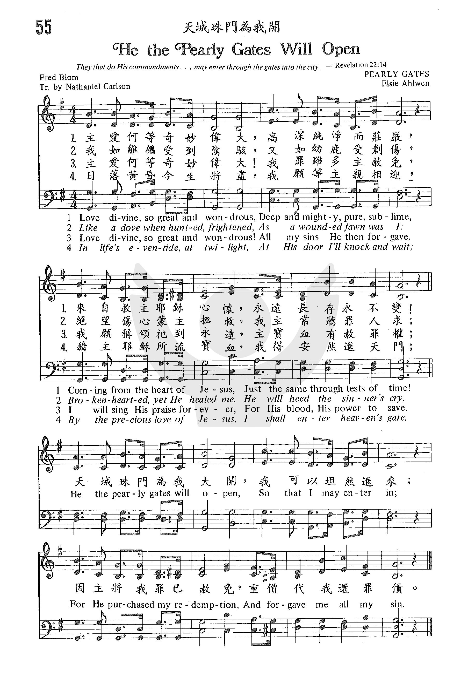

0987
He The Pearly Gates Will Open _Frederick
A. Blom
天城珠门为我开
|
|
|
|
1 Love divine, so great and wondrous,
Deep and mighty, pure, sublime,
Coming from the heart of Jesus,
Just the same through tests of time!
Chorus:
He the pearly gates will open,
So that I may enter in;
For He purchased my redemption
And forgave me all my sin.
2 Like a dove when hunted, frightened,
As a wounded fawn was I;
Brokenhearted, yet He healed me.
He will heed the sinner's cry. [Chorus]
3 Love divine, so great and wondrous!
All my sins He then forgave;
I will sing His praise forever,
For His blood, His power to save. [Chorus]
4 In life's eventide, at twilight,
At His door I'll knock and wait;
By the precious love of Jesus,
I shall enter heaven's gate. [Chorus]
Source: Baptist
Hymnal 2008 #609
|
055 天城珠門為我開 HE THE PEARLY GATES WILL OPEN 主愛何等奇妙偉大，高深純淨而莊嚴，
來自救主耶穌心懷，永遠長存永不變！
天城珠門為我大開，我可以坦然進來；
因主將我罪已赦免，重價代我還罪債。
我如雛鴿受到驚駭，又如幼鹿受創傷，
絕望傷心蒙主拯救，我主常聽罪人求；
天城珠門為我大開，我可以坦然進來；
因主將我罪已赦免，重價代我還罪債。
主愛何等奇妙偉大！我罪雖多主赦免，
我願稱頌祂到永遠，主寶血有赦罪權；
天城珠門為我大開，我可以坦然進來；
因主將我罪已赦免，重價代我還罪債。
日落黃昏今生將盡，我願等主親相迎，
藉主耶穌所流寶血，我得安然進天門；
天城珠門為我大開，我可以坦然進來；
因主將我罪已赦免，重價代我還罪債。
|
|
https://www.zanmeishige.com/tab/25372.html?songbook=1&index=55
 |
|
|
|
 He The Pearly Gates Will Open · Billy Graham USA and Canadian Crusade Choirs
He The Pearly Gates Will Open · Billy Graham USA and Canadian Crusade Choirs
-
-
- 天城珠門為我開 HE THE PEARLY GATES WILL OPEN 055
0987
He The Pearly Gates Will Open
天城珠门为我开
|
Short Name: |
Frederick A. Blom |
|
Full Name: |
Blom, Frederick A.( Arvid), 1867-1926 |
|
Birth Year: |
1867 |
|
Death Year: |
1926 |
Frederick Blom
was born on May 21, 1867,
near Enköpking, Sweden. He emigrated to America in the 1890s and joined the
Salvation Army in Chicago. He attended North Park College and Seminary,
served as a minister in the Evangelical Covenant Church. But he strayed from
the church and ended up in prison. After be released from prison, Blom
underwent a spiritual revival, and became pastor at a Swedish Congregational
Church in Pennsylvania. He returned to his native Sweden in 1921 and died
there on May 24, 1927.
Sources: Hustad, p. 208
NN, Hymnary. Source:
http://www.hymntime.com/tch/bio/b/l/o/blom_fa.htm
Tune Information
|
Title: |
[Love divine, so great and wondrous] (Dulin) |
|
Composer
(attributed to): |
Alfred Dulin |
|
Arranger: |
Elsie Ahlwén |
|
Meter: |
8.7.8.7 with refrain |
|
Incipit: |
33213 21144 32132 |
|
Key: |
G
Major |
|
Copyright: |
Public Domain |
|
Short Name: |
Elsie Ahlwén |
|
Full Name: |
Ahlwén, Elsie, 1905-1986 |
|
Birth Year: |
1905 |
|
Death Year: |
1986 |
Hymnary.org does not have biographical information about this person.
Words: Fredrick Arvid Blom (b. May 21, 1867; d. May 24, 1927)
Music: (Arranger) Elsie Rebekah Ahlwen (b. May 25, 1905; d. Jan. 6, 1986)
Links:
Wordwise Hymns
The Cyber Hymnal
Note: This 1917 Swedish hymn was translated into English by Nathaniel Carlson
(1879-1957) around 1935. The original melody was written by Alfred Olsen Duhlin
(1894-c.1960), a member of the Salvation Army, as was Blom. Gospel singer George
Beverly Shea did a great deal to popularize this song through the use of it in
Billy Graham’s meetings, and his recordings.
The story behind the hymn is found in the Wordwise Hymns link. However, you
should also read the two comments from Mats Ahlgren (and my response). His
account differs from mine in several details, and I’m uncertain which is the
correct version.
The biblical reference to the “pearly gates” of heaven is found in Revelation
21:21, a passage which gives many details concerning the beautiful heavenly city
(vs. 10-23).
“The twelve gates were twelve pearls: each individual gate was of one pearl. And
the street of the city was pure gold, like transparent glass” (Rev. 21:21).
This city is what we commonly call “heaven,” where the throne of God is (Rev.
4:1-2), and where the Lord is presently preparing dwelling places for us (Jn.
14:2). As John describes it, it is glorious and beautiful, a city of gold and
light. But we can be sure any words would fail to give anything more than an
inkling of the marvels that await us there.
The heavenly kingdom is given several names in the Word of God, names that
clearly suggest a parallel to the earthly city of Jerusalem, but show its
infinite superiority with terms such as “heavenly,” “holy” and “new.” It is
referred to as: [heavenly] Mount Zion; the city of the living God; the heavenly
Jerusalem (Heb. 12:22); the holy city; New Jerusalem (Rev. 21:2); the great
city; the holy Jerusalem (Rev. 21:10).
CH-1) Love divine, so great and wondrous,
Deep and mighty, pure, sublime!
Coming from the heart of Jesus,
Just the same through tests of time.
He the pearly gates will open,
So that I may enter in;
For He purchased my redemption
And forgave me all my sin.
The occupants of the city include: God Himself (Matt. 23:22; Rev. 4:1-5), the
holy angels (Matt. 22:30; Rev. 5:11), and the saints of God (Rev. 15:3; 19:8;
cf. I Thess. 3:13). Scripture is also very clear about those who are excluded:
the devil and his demonic host (Matt. 25:41; Rev. 20:10), and all the unsaved
sinners, those who have not appropriated God’s means of salvation (II Thess.
1:8-9; Rev. 20:15; 21:8; 22:15).
There remains only the question of how one qualifies to enter heaven. How does a
sinner become a saint (one of God’s set-apart ones)? How can a condemned sinner
be fitted for heaven? God’s way is truly wonderful. He sent His Son to take
sin’s punishment for us, on the cross. When a sinner puts His faith in Christ,
that payment is credited to his account, and he is forgiven and set free (Jn.
3:16; II Cor. 5:21; Eph. 1:7; I Jn. 1:7).
There is no other way (Jn. 14:6; Acts 4:12). The many animal sacrifices that
came before Calvary were accepted by God, when they were offered in faith. But
they were only a foreshadowing of what was to come. Their fulfilment came in
Christ, the Lamb of God (Jn. 1:29; I Pet. 1:18-19). Now, sinners are called to
“believe on the Lord Jesus Christ,” and on that basis they will be saved (Acts
16:30-31).
CH-3) Love divine, so great and wondrous,
All my sins He then forgave!
I will sing His praise forever,
For His blood, His pow’r to save.
Questions:
1) How would you answer someone who feels that he/she will reach heaven by being
sincere and doing the best he/she can?
2) Other that the Lord Jesus being there, what is the greatest thing about
heaven for you?
Links:
Wordwise Hymns
The Cyber Hymnal
https://wordwisehymns.com/2013/05/29/he-the-pearly-gates-will-open/
A few months ago we flew to Wisconsin to visit relatives and we had
a wonderful time. But our trip home was frustrating and tiring. We had
to drive through driving wind and rain to Milwaukee to the airport. We
were held up by an accident which closed the highway. We finally
arrived at the airport and after all the check-in and security
procedures were completed, we found our gate. Then we were told that
our flight would be delayed several hours. It finally came and we flew
to Baltimore where we still had 1.5 hours of driving to get home. Early
in the morning, after many tiring hours of travel, we stumbled through
our front door. What a relief to go through the door and finally be
home. Someone has said that there is no place like home. I've often
thought of that trip as a reminder of our real life journey home. At
times it can be frustrating, tiring and filled with disappointments.
The journey can be hard, but someday we will finally be home. Now I
have no idea what our final arrival will actually be like, except that
Jesus will be there. Will we, as many suggest, enter through the pearly
gates? I really don't know and I guess I really don't care. As
spectacular as those gates will be, the fact that we will be home with
our Savior is the real exciting expectation. The biblical reference to
the "pearly gates" of heaven is found in Revelation 21:21, a passage
which gives many details concerning the beautiful heavenly city (vs.
10-23). "The twelve gates were twelve pearls: each individual gate was
of one pearl. And the street of the city was pure gold, like transparent
glass" (Rev. 21:21). Hymn writers over the centuries have written about
heaven and this week's hymn choice talks about Jesus opening the pearly
gates for us to enter. I don't know if that will actually happen, but
this hymn does remind us of Jesus, the One who will meet us, and His
love and sacrifice for us that will make all of this possible. There
are conflicting stories about the hymn's writing, but here is one shared
by several sources. It was written by Frederick Arvid Blom (1867-1926)
who was born in Sweden and immigrated to America in the 1890's. He
served as an officer in the Salvation Army and as a pastor of a church.
But his life took a radical downward turn. Blom became spiritually
backslidden and resigned from the ministry. He says, "I became
embittered with myself, [and] the world." He drifted into a life of
drunkenness and sin, and eventually was involved in illegal activities.
When he was caught, he was convicted and sent to prison. But the Lord
kept His hand on him there. Surrounded by locked gates and iron bars, he
cried to God, and sought forgiveness for his sins. With his sentence
fully served, Blom was released. It is said that when the prison gates
clanged shut behind him, it brought to his mind that he was assured of a
welcome one day at the pearly gates of the heavenly city. With that
thought in mind, Blom wrote a hymn he called Because of
the Blood. This 1917 Swedish hymn was translated into English by
Nathaniel Carlson around 1935 and today is known by the first phrase of
the chorus. George Beverly Shea did a great deal to popularize this
song in Billy Graham's meetings, and in his recordings. As you study
the hymn you can see that verses two and three are really Blom's
personal testimony. He was like a wounded fawn and brokenhearted. Yet
that love, so great and wondrous, found him in prison and through the
blood of Jesus he was saved and forgiven. And He testifies that it was
that wondrous love that purchased his redemption and forgave him all his
sin. Is this your testimony today? Have you experienced his redemption
and forgiveness? Are you on your journey to that spectacular home that
is being prepared for you? Soon our weary journey as pilgrims on this
earth will come to an end and we will finally be home.
http://barryshymns.blogspot.com/2015/09/he-pearly-gates-will-open.html
{kind=link}